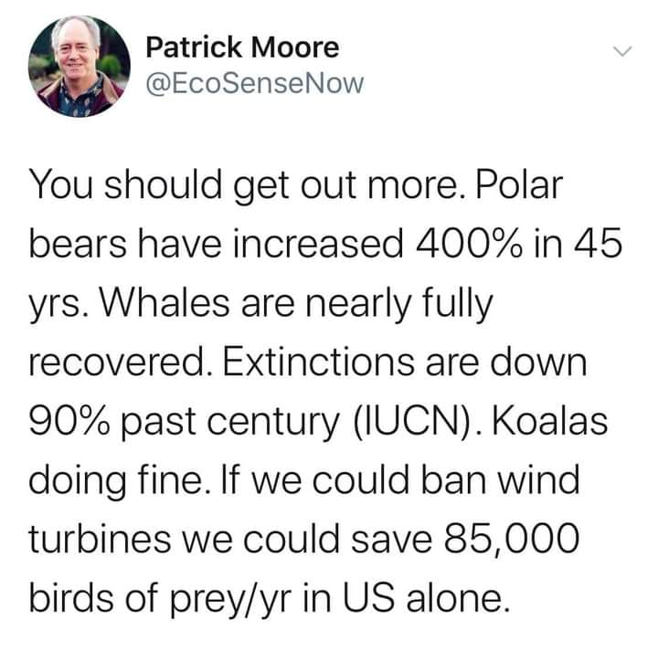
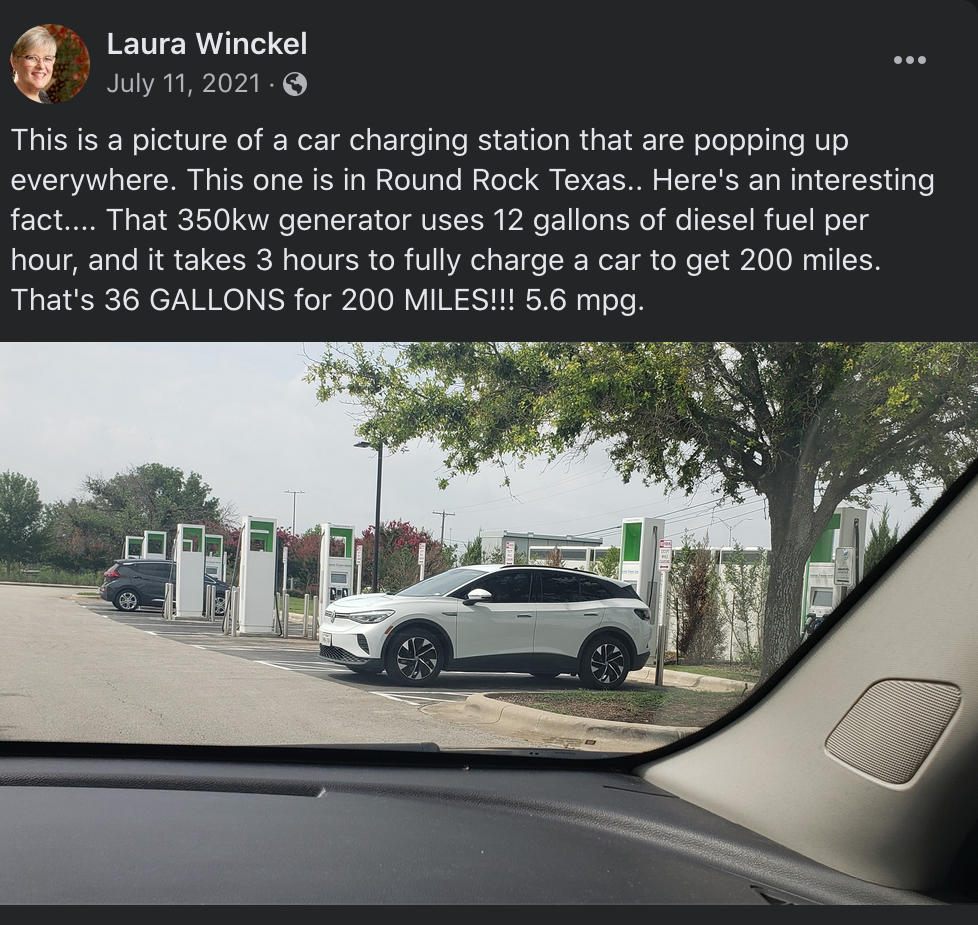
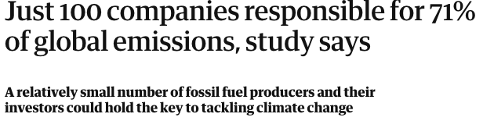
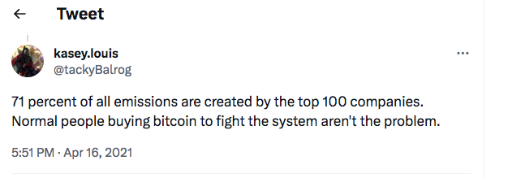

In addition to the exercises provide here, the Case Studies at the Calling Bullshit 1 course, hosted by the University of Washington Center for an Informed Public, provide a rich set of fully developed opportunities to explore how quantitative skills can be used to detect "fake news." Instructors are encouraged to explore and use these materials in conjunction with this text.
Objective: Understand the sources and consequences of error in a single measurement.
1.
Method: Develop a method to measure the height of your instructor (teacher, professor, etc) and make the measurement. Use that measurement to make another measurement. Then use the second measurement in an equation.
Instructions
Split up into teams of two or more.
One team gets a tape measure. Another team gets a yardstick. Still another team gets a 1-ft ruler.
Agree on how you will measure your instructor's height.
Make the measurement according to the selected approach.
Now measure the length, width, and/or height of the classroom using the instructor's height.
Calculate the volume of the classroom using the length, width, and height.
Compare the methods selected, the tools available, the individual measurements, and the result from the equation for the different groups.
Have each group identify the possible sources of error in the exercise and how they propagate.
Discuss the groups' results with respect to the five Cs explained in the text: coincidence, correlation, causation, convergence, and consensus. Which ones apply?
Extrapolate the findings to general sources of misinformation, misleading information, studies and research taken in isolation, etc.
Objective: Understand the assumptions which go into a "forecast" or a simulation, in this case an on-line financial calculator, and its purpose.
2.
Method: Study the instructions, narrative, and results for an on-line calculator that forecasts/estimates how you much you will need to save to achieve certain retirement savings goals.
Instructions:
Thoroughly review the material at this link: https://www.nerdwallet.com/investing/retirement-calculator. Note: there's no need to download the app, just work with this page and see how the numbers change and, importantly, the colors adjust on the graphics
Identify as many of the assumptions used to "build" this calculator - some may be obvious, some may not. Hint: A "default" value is also an assumption. There are also hidden assumptions.
After reading thoroughly, go through the forms on the left and "play" with the numbers - record the "scenarios" you try by listing and grouping the values you use - age, pre-tax income, current savings, monthly savings rate, etc. You can think of the differences in the "values" you select in the same way as "errors" in the previous example.
See if you can identify the assumption(s) or defaults which have the greatest impact on the results
Contemplate why this calculator is available free of charge. What is the purpose of the company making this calculator available? Hint: Where does the "Get started" button take you?
Did you remember to hit the link at the very top in very small print, "advertiser disclosure"? And did you click on the "list of partners" at the end of the text box?
Discuss and defend whether you would classify this "calculator" as good information, misleading information, or misinformation? Or, is it independent/objective 'content' or advertising? Is it "useful" content regardless of how you classify it?
Objective: Assess the validity of claims made in a public policy advertisement.
3.
Colgate toothpaste was once fined for making the misleading claim that "80% of dentists recommend Colgate toothpaste."
Read about the case that was made against Colgate. How was their claim true? How was it misleading?
How could Colgate have more accurately represented the results of their survey? Create an advertising statement that uses the same survey information you researched in Item 3.9.3.a, but is not misleading.
When you hear a claim like Colgate's, why should you be suspicious about it? What particular parts of the claim sound "off"?
4.
In December 2021, the following meme circulated widely on social media:

Figure3.9.1.December 2021 meme attributed to Patrick Moore (@EcoSenseNow).
Evaluate the 5 claims made in the meme. Which are true and which are false?
What sources did you use to determine whether these claims are true or false? Why are these sources more reliable than the tweet?
Which numerical information in the tweet should have served as a clue that some of these claims were not true? Explain why those parts of the claim are a bit suspicious.
5.
Another meme which circulated on Facebook in July 2021 shows an image of an electric car charging station, along with a claim about the miles per gallon (mpg) that the car charging will get.

Figure3.9.2.Facebook meme which circulated in July 2021, attributed to Laura Winckel.
The meme contains a number of quantitative claims, as well as a non-quantitative claim - that the station is running on a diesel generator, which is not true. What are the quantitative claims being made?
Which of the quantitative claims are true? Cite the sources you used to verify the claims.
What about these claims should make you suspicious?
6.
An article in The Guardian 2 on 07/10/2017 had the provocative headline "Just 100 companies responsible for 71% of global emissions, study says"

Figure3.9.3.Headline from The Guardian, 07/10/2017.
It is important to learn that a quantitative claim can be true, but still be misleading. Here, the claim that just 100 companies are responsible for 71% of global emissions is (up to some uncertainty in the exact numbers) factually correct - but it is missing some important context. Read through the article and do some research on your own. What do most of the companies listed in this study do? What kinds of products do they produce?
Based on your research in the previous problem, how is the author using the term "responsible" here? Do you agree that these companies are responsible for 71% of emissions?
This tweet from April 2021 refers to the claim in the headline:

Figure3.9.4.Tweet from @tackyBalrog on April 16, 2021 How does this tweet fundamentally misunderstand the claim being made?
What would be a better way to state the claim being made in the headline? Write your own headline which would present the same quantitative information in a less misleading way.
7.
Method: Apply "reverse quantitative analysis" (RQA), or working backwards from the numerical result to assess the error, biases, assumptions, uncertainties, exaggerations, dramatization, etc.., to this headline: "Social Isolation Is As Deadly As Smoking Up to 15 Cigarettes a Day," in a public policy/campaign ad by Meals on Wheels (www.mealsonwheelsamerica.org) to encourage viewers/readers to donate money.
Instructions
First, from a "math for the people" point of view, what are the most important words in the headline?
Research this 'claim" by doing as much searching on the internet as possible and write up your findings.
Ask yourself how do they define "social isolation?" How do they measure it?
Explain to yourself how they have arrived at this association between social isolation and smoking.
Apply the 5 Cs to this situation.
Would you characterize this statement as good information, misleading information, misinformation, or a flat out lie? Or a worthwhile dramatization, useful exaggeration, or hype?
Objective: Learn to identify a flawed graph.
8.
The data in the US Unemployment Spreadsheet 3 gives unemployment rates in the United States from the year 2000 to 2023. Here's a graph of all of the data.
Figure3.9.6.US Unemployment Rises during the Obama Administration. How is this graph misleading? What do you think that the creator of the graph was trying to prove? How could the graph be made less misleading?
Use the data provided in US Unemployment Spreadsheet 4 to create a less misleading graph about the US Unemployment Rate during the Obama administration.
Figure3.9.7.US Unemployment Rises during the Trump Administration. How is this graph misleading? What do you think that the creator of the graph was trying to prove? How could the graph be made less misleading?
Use the data provided in US Unemployment Spreadsheet 5 to create a less misleading graph about the US Unemployment Rate during the Trump administration.
9.
Use the data provided in US Unemployment Spreadsheet 6 to create a misleading graph. Choose a statement - true or false - that you would like to convince people of, and use the data to create a graph which would convince someone of that point. Explain why you chose to graph the data the way that you did.
10.
Method: Find a flawed graph, indicate how the creator of the graph wants people to interpret it, and then discuss how it would be interpreted if the y-axis or x-axis were constructed differently.
Instructions:
In a previous class, ask students to bring in graphs they find online. Partisan news organizations are a good place to look.
Ask each student to show the class their graph.
For each, first ask the students as a whole the likely interpretation intended and then how it could be fixed to cause people to interpret it more accurately.